LLPS C5 High/Low 与配体关联
观察性分析。主展示为specimen内中位数、min.cells=10。统计单位/分母见图数据和综合报告，颜色不表示显著性。
中文报告
CellChat_circle_high
PDF | 绘图数据
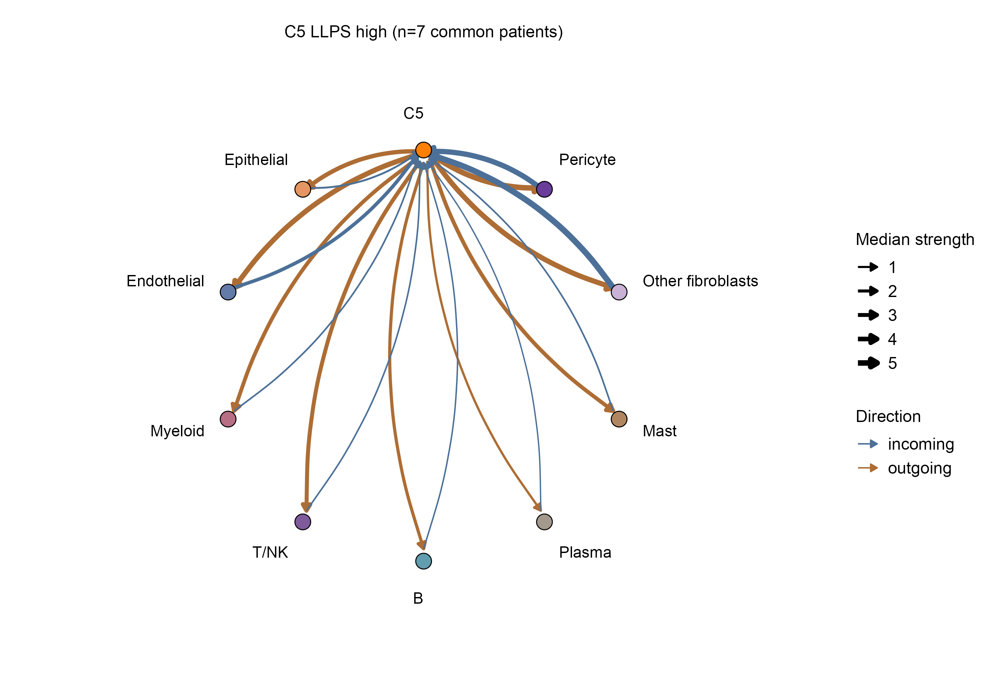
LLPS_ligand_correlation_heatmap
PDF | 绘图数据
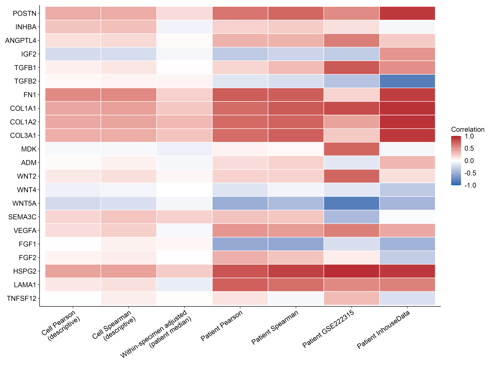
LR_high_low_bubble
PDF | 绘图数据
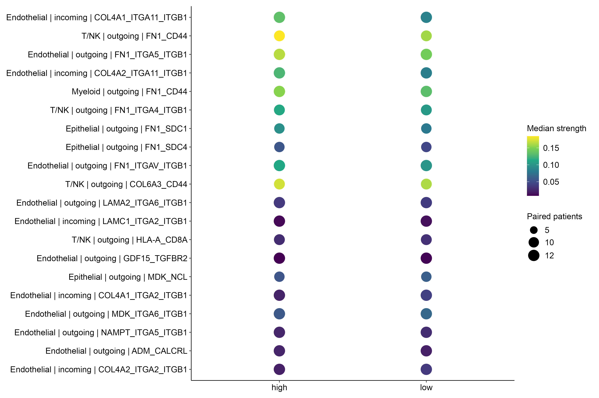
communication_difference_forest
PDF | 绘图数据
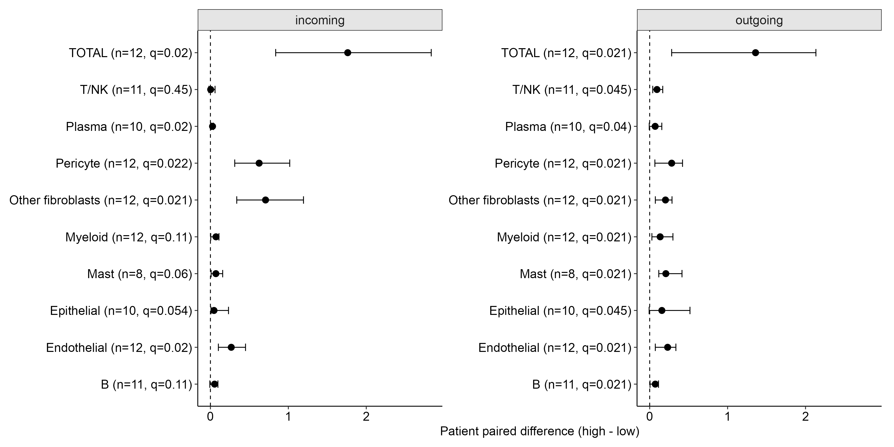
communication_dual_triangle
PDF | 绘图数据

integration_CellChat
PDF | 绘图数据
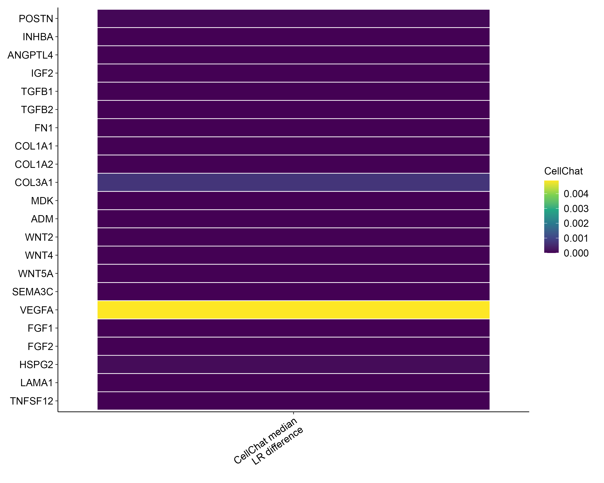
integration_NicheNet_rank
PDF | 绘图数据
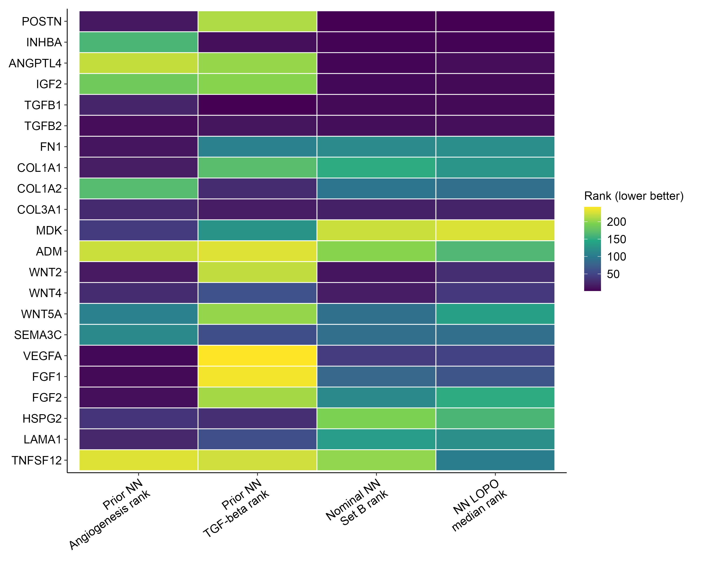
ligand_ANGPTL4_cell_scatter
PDF | 绘图数据
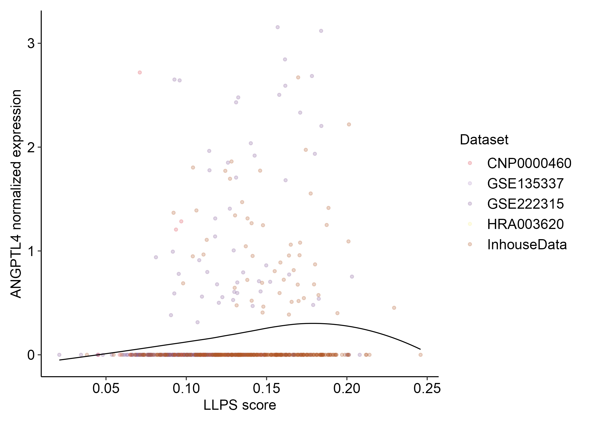
ligand_ANGPTL4_patient_scatter
PDF | 绘图数据
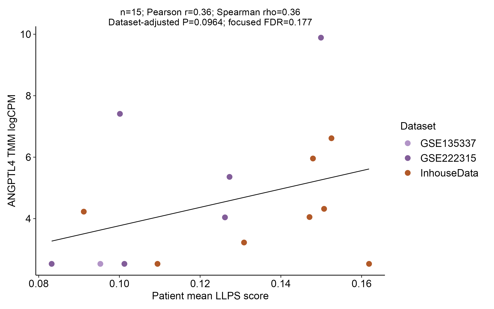
ligand_COL1A2_cell_scatter
PDF | 绘图数据
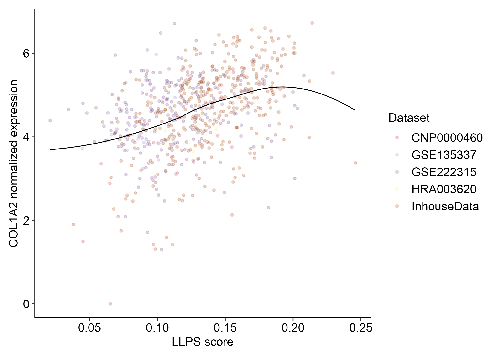
ligand_COL1A2_patient_scatter
PDF | 绘图数据
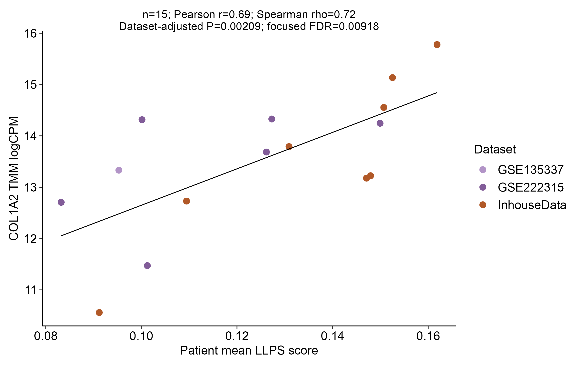
ligand_FN1_cell_scatter
PDF | 绘图数据
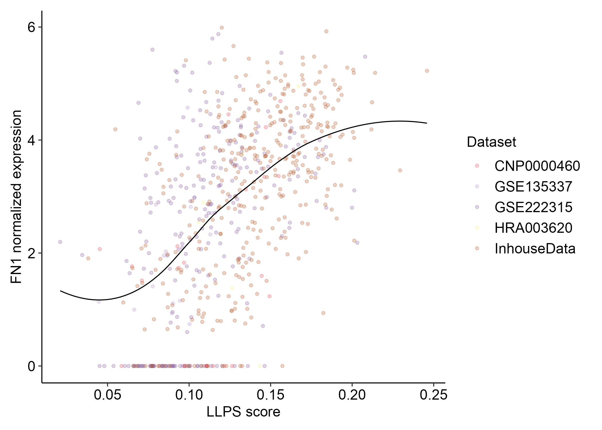
ligand_FN1_patient_scatter
PDF | 绘图数据

ligand_HSPG2_cell_scatter
PDF | 绘图数据
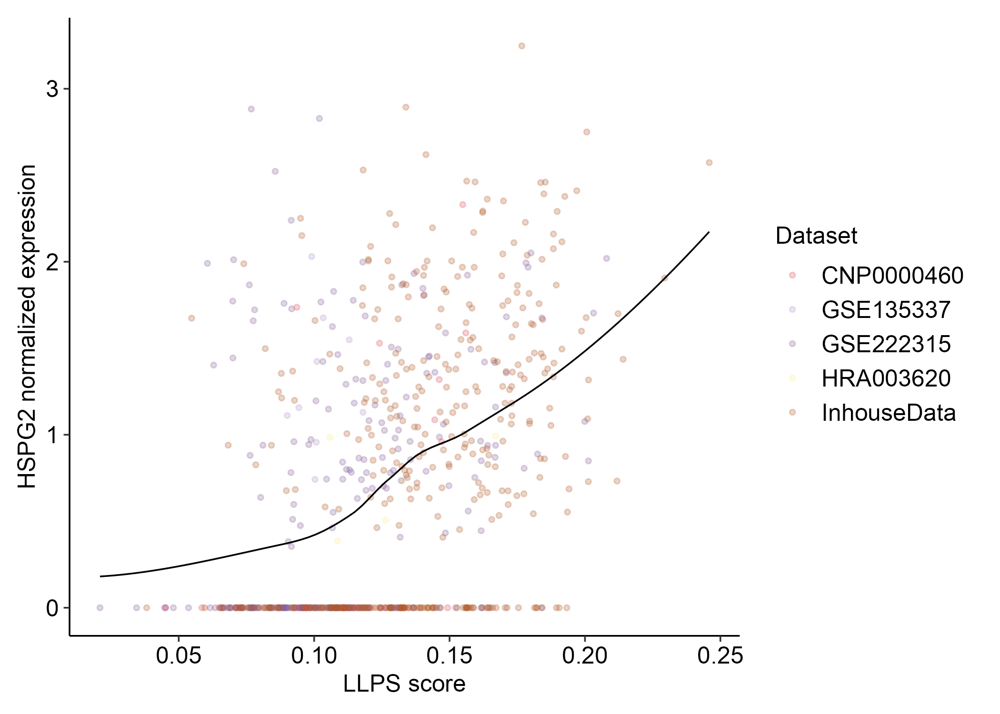
ligand_HSPG2_patient_scatter
PDF | 绘图数据

ligand_INHBA_cell_scatter
PDF | 绘图数据

ligand_INHBA_patient_scatter
PDF | 绘图数据

ligand_POSTN_cell_scatter
PDF | 绘图数据

ligand_POSTN_patient_scatter
PDF | 绘图数据
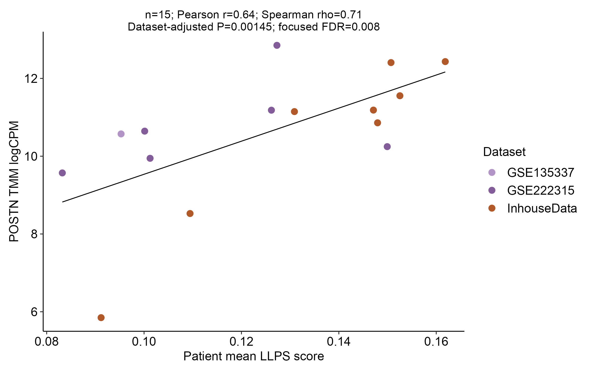
ligand_TGFB1_cell_scatter
PDF | 绘图数据

ligand_TGFB1_patient_scatter
PDF | 绘图数据
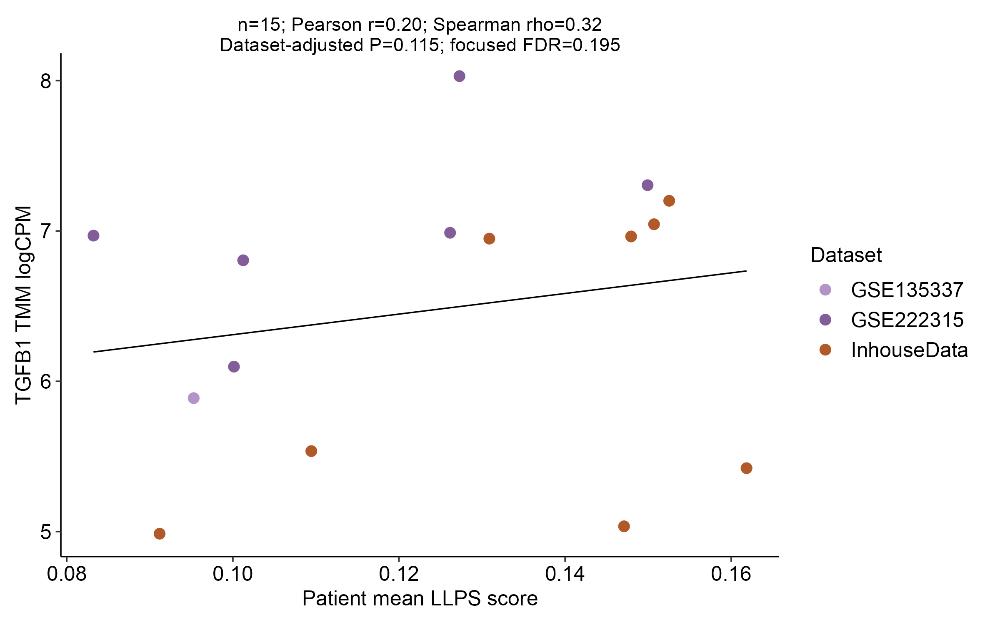
multi_evidence_integration
PDF | 绘图数据
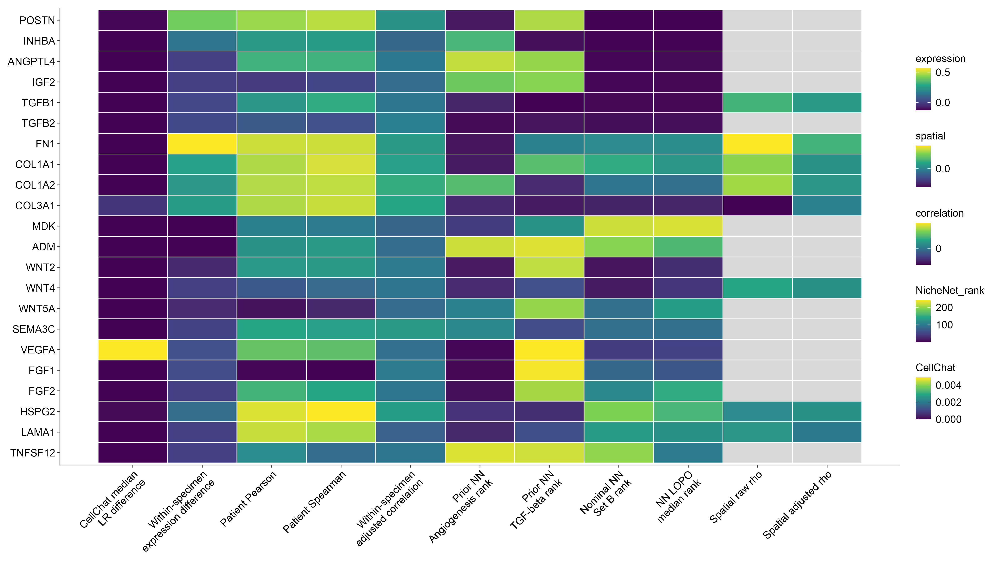
technical_covariate_paired_QC
PDF | 绘图数据